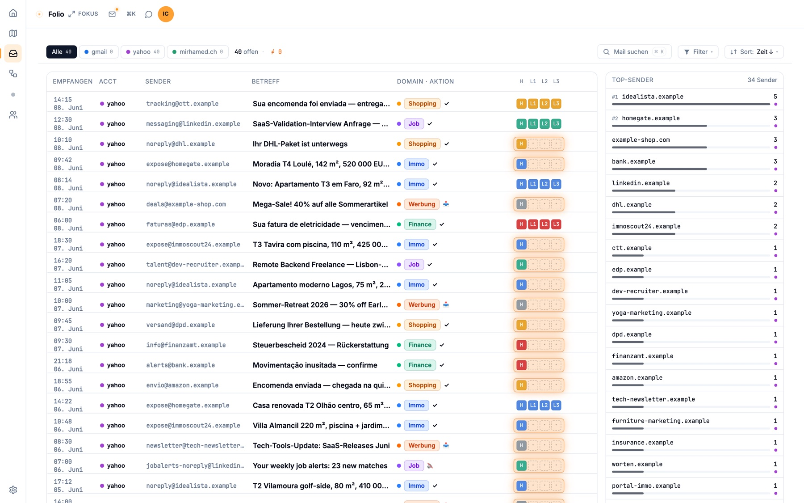
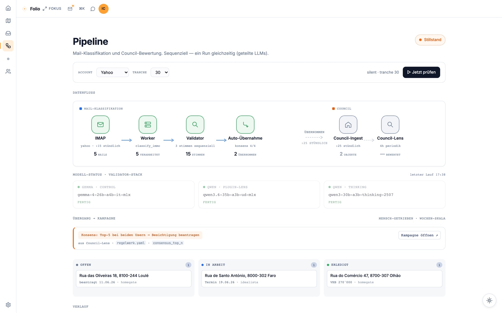
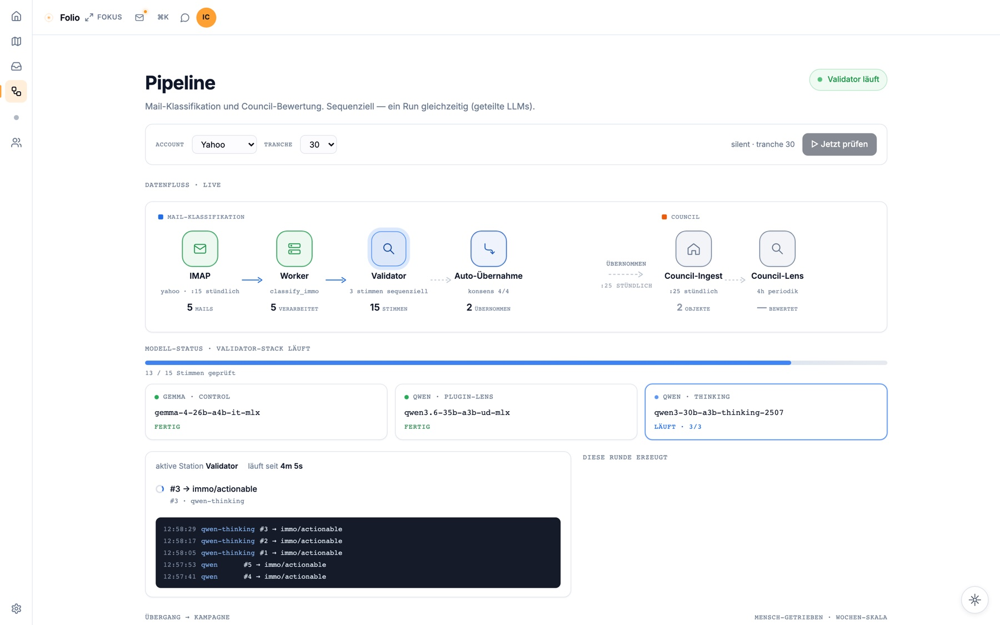
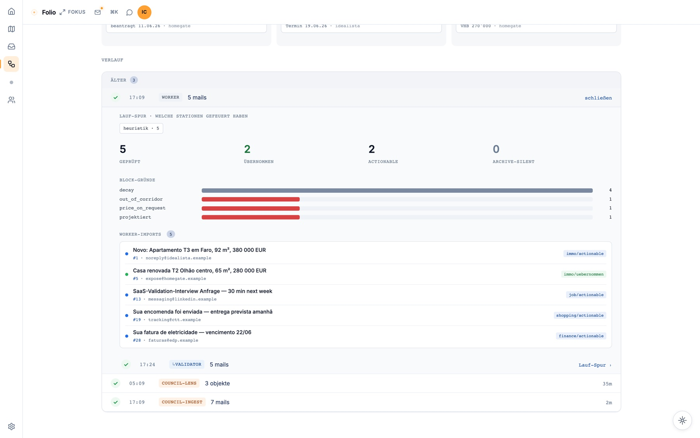
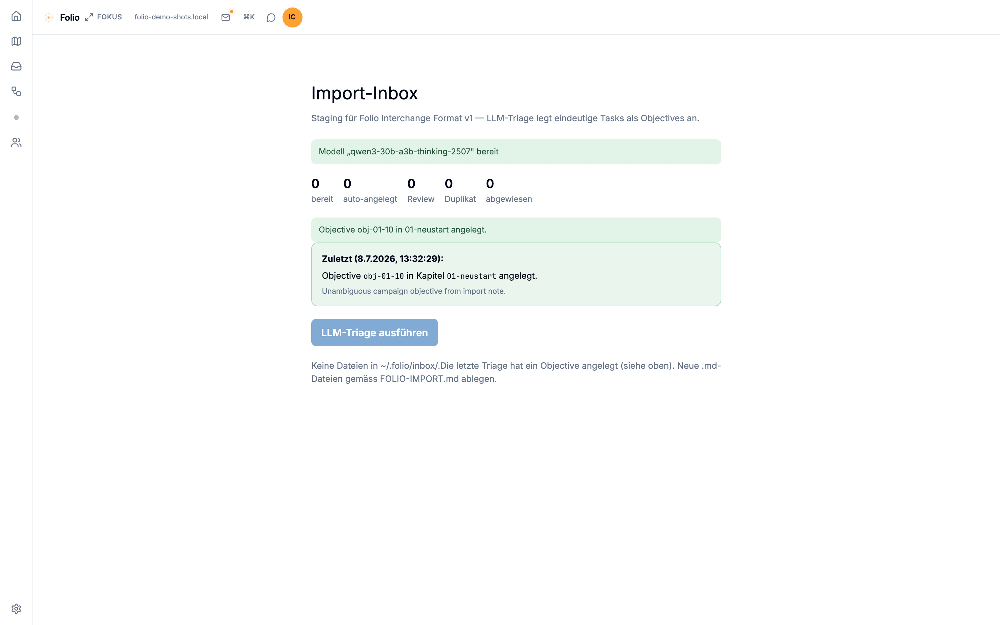
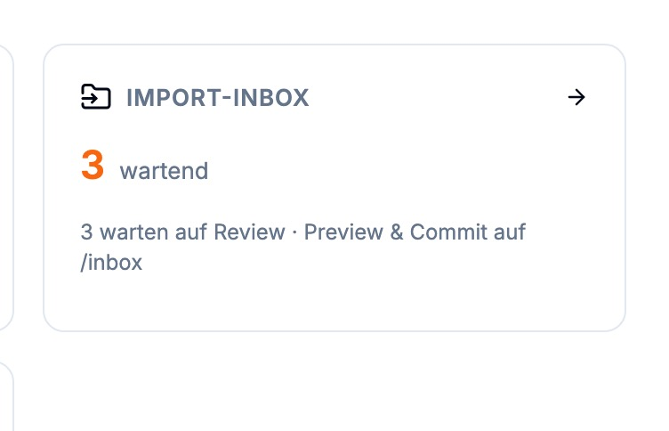
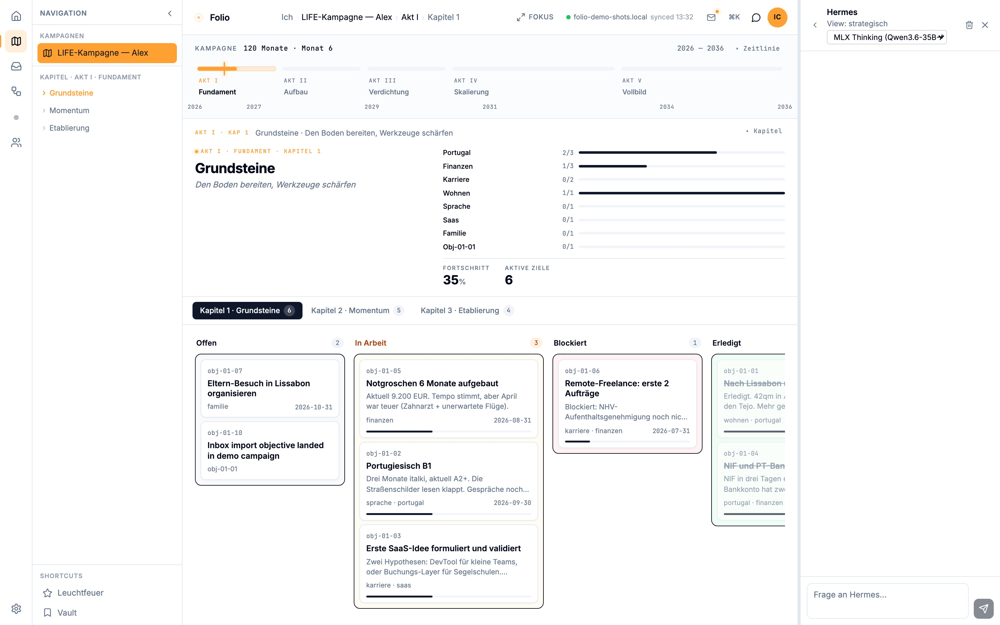

classified and triaged, June 2026 — and every decision, in the end, went through me. The most-tested part of the whole system. klassifiziert und triagiert, Juni 2026 — und jede Entscheidung lief am Ende über mich. Das am härtesten erprobte Stück des ganzen Systems.
Not the robots from the story. This is what actually runs. Nicht die Roboter aus der Geschichte. Das hier ist, was wirklich läuft.
How it actually worksWie es wirklich funktioniert
For each incoming mail, two things propose a category at the same time — a local LLM and a deterministic rules engine. A human confirms or corrects the suggestion in one tap. Every decision is logged to a local database. Nothing is bypassed, nothing leaves the machine. Für jede eingehende Mail schlagen zwei Dinge gleichzeitig eine Kategorie vor — eine lokale KI und eine deterministische Regel-Engine. Ein Mensch bestätigt oder korrigiert den Vorschlag in einem Tap. Jede Entscheidung landet in einer lokalen Datenbank. Nichts wird umgangen, nichts verlässt den Rechner.
Validation across two model familiesPrüfung über zwei Modell-Familien
Before anything is applied automatically, three blind LLM voices weigh in — drawn from two different model families (Gemma and two Qwen variants). On a single 48 GB machine they take turns by swapping models in and out of memory. Bevor etwas automatisch übernommen wird, votieren drei blinde LLM-Stimmen — aus zwei verschiedenen Modell-Familien (Gemma und zwei Qwen-Varianten). Auf einer einzigen 48-GB-Maschine wechseln sie sich ab, indem Modelle aus- und eingeladen werden.
The cross-family check is the point: a second family catches what the first one's blind spots would miss. Der Cross-Family-Check ist der Kern: Eine zweite Familie fängt, was die blinden Flecken der ersten übersehen.
Honestly: what's proven, what isn'tEhrlich: was belegt ist, was nicht
Per-mail classification and human triage — the 550. This part runs in daily use.Pro-Mail-Klassifikation und menschliche Triage — die 550. Dieser Teil läuft im täglichen Einsatz.
The 3-voice validator, auto-promotion, and the IMAP move/cleanup are built and wired — not yet proven at scale.Der 3-Stimmen-Validator, die Auto-Übernahme und das IMAP-Verschieben sind gebaut und verdrahtet — noch nicht im großen Maßstab belegt.
Learning loops that adapt from each correction.Lern-Schleifen, die aus jeder Korrektur lernen.
Evidence — from the demo vaultBelege — aus dem Demo-Vault
Real captures, demo data only — no private mail.Echte Aufnahmen, nur Demo-Daten — keine private Post.







Open to inspect — the code is public ↗Offen einsehbar — der Code ist öffentlich ↗